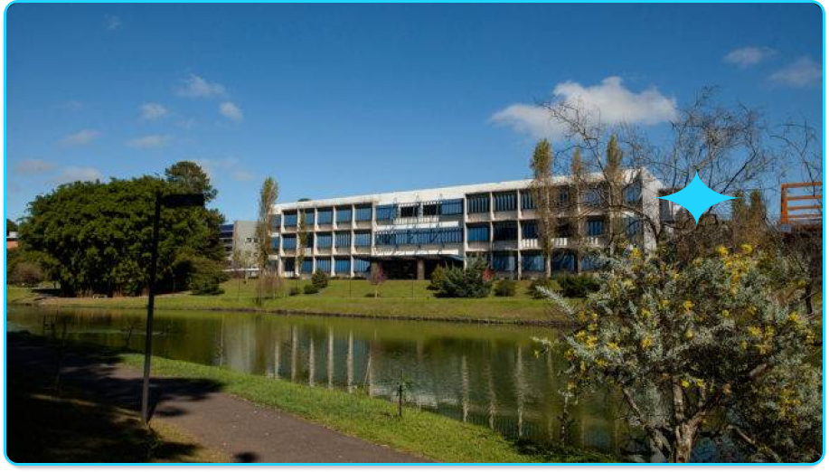

Sobre mim:
Olá! Meu nome é Carlos Eduardo Bittencourt e sou formado em Análise e Desenvolvimento de Sistemas pela Universidade Positivo, com conclusão no final de 2025. Atualmente, em 2026, iniciei minha graduação em Engenharia de Software, também pela Universidade Positivo, com o objetivo de aprofundar ainda mais meus conhecimentos em desenvolvimento e arquitetura de sistemas.
Durante minha formação acadêmica, tive contato com diversos conceitos importantes da área de tecnologia, como lógica de programação, engenharia de requisitos, arquitetura de software, modelagem de sistemas e desenvolvimento de aplicações. Ao longo desse período, desenvolvi projetos acadêmicos e práticos que envolveram análise de sistemas, levantamento de requisitos, criação de diagramas UML e desenvolvimento de aplicações, sempre buscando aplicar na prática os conceitos aprendidos em sala de aula.

Sou uma pessoa que valoriza o aprendizado contínuo e acredito que a prática é a melhor forma de consolidar o conhecimento. Por isso, mantenho meus repositórios públicos como forma de demonstrar minha evolução e dedicação aos estudos. Tenho facilidade para trabalhar em equipe e gosto de contribuir para soluções que unem organização, funcionalidade e bom desempenho. Atualmente, sigo estudando, desenvolvendo projetos e buscando oportunidades para aplicar meus conhecimentos em um ambiente profissional, com o objetivo de construir uma carreira sólida e promissora na área de TI.